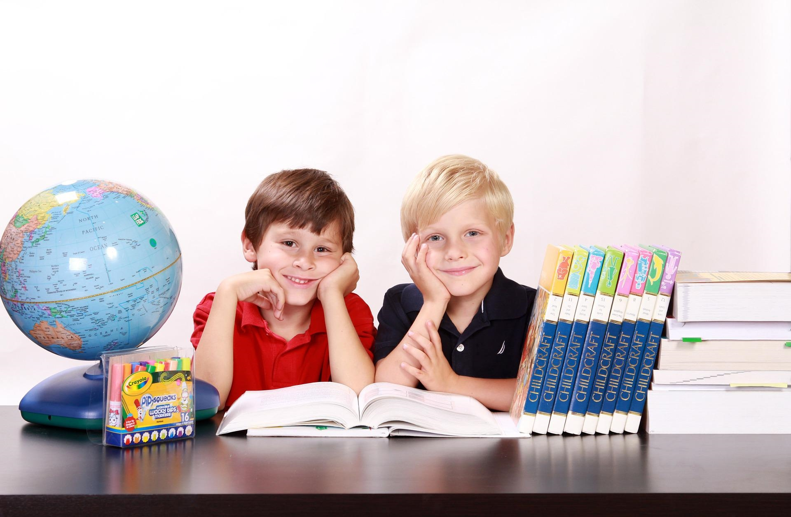
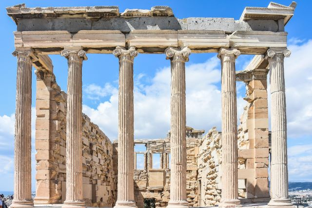

Etusivu
Sivusto on suunnattu alakoululaisille 1–6-luokkalaiset. Sivustolla on 4 erilaista tehtäväpakettia. Jokaisessa tehtävä paketissa on 5 kysymästä ja jokaista kysymystä kohden on 3–5 erilaista vastausvaihtoehtoa. Tehtäväpaketit koostuvat maantiedosta, historiasta, matematiikasta (1–3-luokkalaiset) ja matikkapähkinästä ( 4–6-luokkalaisille). Oppilas voi näin testata omaa oppimistaan leikkimielissesti ja opettaja voi myös käyttää sivustoa haluamiensa oppilaiden kanssa.
"Lapselle muodostuu totuudenmukainen kuva itsestään, kun hän huomaa oppivansa uutta ja saa aitoja onnistumisen
kokemuksia sekä itsekseen että perheen ja muiden lasten kanssa.
Vanhemman on hyvä tarjota lapselle tilaisuuksia opetella uusia asioita.
Uuden harjoittelu kannattaa aloittaa asioista, jotka sujuvat lapselta luontaisesti ja siirtyä onnistumisten
kautta lapselle vaikeampiin taitoihin.
Toisaalta epäonnistumisia ei kannata pelätä, eikä lapsen osaamista pidä verrata toisten saman ikäisten lasten
taitoihin."
Mannerheimin lastensuojeluliitto
Sivustolla oppilas voi turvallisesti lähteä testaamaan omaa tietämystään ja saada onnistumisen tunteita! Samalla myös huomata, mitkä asiat eivät vielä aivan onnistu.
Sivustolle ei tarvitse erikseen tehdä tunnuksia tai kirjautua. Oppilas voi suoraan lähteä tekemään tehtäviä!
Matikkapulmat 1-3-luokka
Lapset ovat luonnostaan kiinnostuneita matematiikasta, he vertailevat ruoka-annostensa suuruutta, saamiensa lahjojen määrää, kokoaan suhteessa kavereihin jne.
Tiedon omaksuminen on huomattavasti helpompaa ja tehokkaampaa, mikäli lapsella on jo valmiiksi tiedon tarve (esim. leikissä eteen tullut ongelma, johon yhdessä etsitään ratkaisua).
Lasta kannattaa kannustaa etsimään ratkaisua itse, vaikka usein aikuisenkin apua tarvitaan esim. materiaalin hankinnassa tai pohdinnan tukena.
Ongelmien ratkaiseminen itse tukee lapsen itseluottamusta ja auttaa häntä muodostamaan positiivisen kuvan itsestään oppijana.
Matemaattisten taitojen kehittyminen - Leikkien
Matikkapulmien tehtävät on tarkoitettu 1–3-luokkalaisille. Tehtäviä on 5 kpl ja jokaisesta oikeasta vastauksesta saa yhden pisteen.
Tehtävinä on tavallisia yhteenlaskutehtäviä, joista osa on sanallisena. Tehtävissä ei ole aikarajaa, joten voit vapaasti käyttää apunasi paperia ja kynää!
Lopuksi saat tiedon, montako tehtävää sait oikein!
Tehtäviä pääset tekemään klikkaamalla "Matikkapähkinät" otsikkoa.
Matikkapähkinät
Matematiikan pääalueet syntyivät käytännön tarpeista. Laskutaito oli tarpeellinen niin kaupankäynnissä,
maanmittauksessa kuin tähtitieteellisten tapahtumien ennustamisessakin. Matematiikka on siis alun perin muiden
tieteiden (lähinnä luonnontieteiden) työkalu ja tutkimustulosten tarkka ilmaisuväline. Matematiikan avulla
voidaan teoreettisesti tarkastella käytännössä havaittuja asioita ja tehdä näistä tutkimustuloksista
johtopäätöksiä.
Matematiikan vanhimpia osa-alueita ovat aritmetiikka eli laskuoppi sekä geometria. Aritmetiikka käsittelee
numeroita ja lukuja, joista ensimmäisenä on otettu käyttöön positiiviset kokonaisluvut eli luonnolliset luvut,
sekä niillä suoritettavia laskutoimituksia. Lukukäsitteen myöhemmät laajennukset ovat johtaneet muidenkin
lukulajien kuten reaalilukujen ja kompleksilukujen käyttöönottoon. Lukuteoria tutkii lukujen syvempiä
ominaisuuksia.
Matematiikka - Wikipedia
Matikkapähkinät on suunnattu 4–6-luokkalaisille. Matematiikan tehtäviä on 5 kpl ja jokaisesta oikeasta
vastauksesta saa yhden pisteen. Heti vastattuasi näet, menikö tehtävä oikein vai ei. Jokaisessa tehtävässä on
yksi oikea vastaus.
Lopuksi saat ilmoituksen, montako pistettä sait testistä, ja sitä vastaavan kuvan!
Tehtäviä pääset tekemään klikkaamalla "Matikkapähkinät" otsikkoa.
Matematiikan tehtävät koostuvat seuraavista:
- Sanallinen prosenttilasku
- Sanallinen jakolasku
- Kertolasku
- Sanallinen tehtävä
- Ympyrän piiri
Maantieto
Maantiede (kreik. geografia, 'maan piirtäminen') on tieteenala, joka tutkii Maan pintaa ja maan pinnalla esiintyviä sekä ihmisen että luonnon aikaansaamia ilmiöitä. Maantiede etsii näiden ilmiöiden säännönmukaisuuksia ja syitä sekä eri ilmiöiden välisiä vuorovaikutussuhteita. Maantieteen tutkimuskohteita ovat esimerkiksi Maan elollisen ja elottoman luonnon prosessit, niiden historia, väestö, kulttuuri, asutus, talous ja ympäristö sekä ympäristönmuutokset kaikissa ajan ja alueiden mittakaavoissa. Maan pinnan lisäksi maantieteessä käsitellään myös maan rakennetta ja maapalloa ympäröivää avaruutta, mutta näiden tarkempi tutkiminen kuuluu tähtitieteen ja geologian piiriin. Yhteistä näille moninaisille tutkimusnäkökulmille on alueellinen tarkastelutapa. Maantieteelle ominaista on ilmiöiden spatiaalinen eli tilaan liittyvä ja temporaalinen lähestymistapa, tämä korostus erottaa sen muista lähitieteistä. Alueet ja paikat ovat maantieteessä keskeisiä. Tärkeitä työvälineitä ja toimintamenetelmiä maantieteessä ovat esimerkiksi kartat, GIS eli paikkatietojärjestelmä, kaukokartoitus, satelliittipaikannus ja kenttätutkimus. Maantieteeseen kuuluviin ilmiöihin aletaan Suomessa tutustua peruskoulun ensimmäisillä luokilla, missä sitä opetetaan osana ympäristöoppia; sen jälkeen se on omana oppiaineenaan (viidenneltä luokalta lähtien), jonka nimenä on maantieto. Lukiossa, kun opetus on jo lähempänä tieteellistä näkökulmaa, oppiaine on nimeltään maantiede. Puhekielessä oppiaine tunnetaan kuitenkin vielä erittäin laajalti vanhalla nimellään myös lukioissa. Oppiaine kuuluu ympäristö- ja luonnontieteellisten aineiden joukkoon.
Maantiede - WikipediaHistoria
Historia (m.kreik. ἱστορία, historía) tarkoittaa paitsi yhteisön menneisyyden vaiheita, myös menneiden tapahtumien kuvausta tai tutkimusta, historiatiedettä ja sen tuloksia. Tieteenalaan viitataan usein sanalla historiantutkimus. Historiatiede eli historia tieteenalana on ennen kaikkea kirjoitettuihin lähteisiin perustuvaa ihmisten menneisyyden tutkimusta. Siten historiallinen aika alkaa kirjoitustaidon keksimisestä. Aikaa ennen kirjoitustaitoa kutsutaan vastaavasti esihistorialliseksi ajaksi. Esihistoriallista aikaa tutkivista tieteistä keskeisin on arkeologia eli muinaistutkimus.
Historia - Wikipedia Tietoa
Web-projekti tiimi 11 kuuluvat Miisa Sammalkangas, Ilia Zubov, Saku Satokangas ja Tomi Valtanen.
Kaikki ovat osallistuneet etusivun tekemiseen ja tekstien muokkaamiseen. Kahdesta eri tyylistä päätimme yhdessä ottaa projektiimme käyttöön sidebarin.Erillisiä vastuualueita ei ole ollut.
Discordissa olemme jakaneet tietoa, lähteitä ja erilaisia ajatuksia projektiin liittyen.Telegramin kautta olemme sopineet yhteisistä tapaamisista.
Web-projekti tiimi 11 omatsivut:
- Miisan omatekemä sivusto on Matikka 1-3-luokka
- Ilian omatekemä sivusto on Maantietoa
- Sakun omatekemä sivusto on Historia
- Tomin omatekemä sivusto on Matikkapähkinät
Miisa Sammalkangas
Matikka 1-3-luokka

Ilia Zubov
Maantietoa

Saku Satokangas
Historia
Tomi Valtanen
Matikkapähkinät